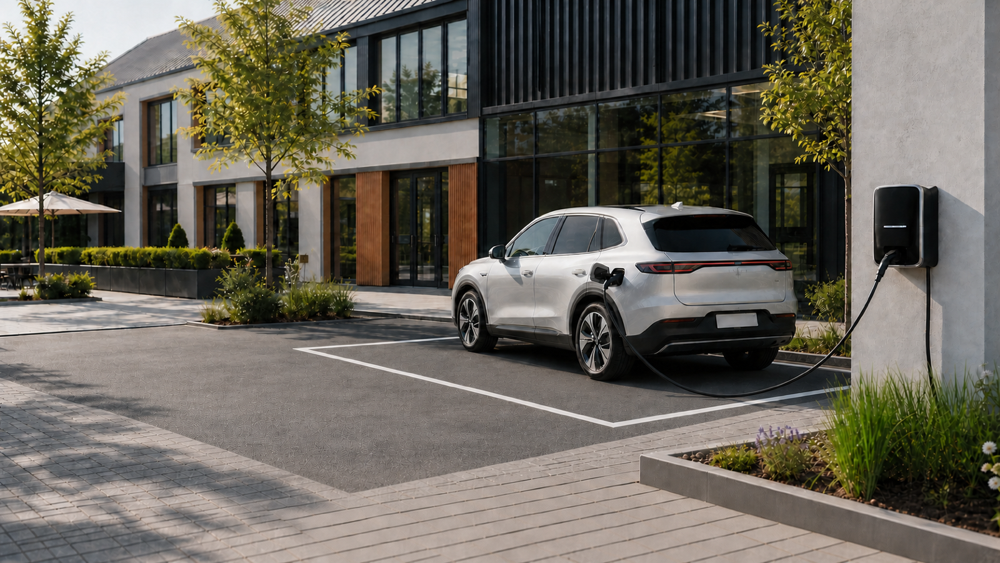

Vom Ladepunkt zum Angebot für andere
Ob Unternehmen, Ferienwohnung, Gastronomie, Verein oder kleiner Gewerbestandort: Viele Ladepunkte könnten auch Gästen, Kunden, Mitarbeitenden oder der Öffentlichkeit zur Verfügung stehen. In der Praxis wird aus einer guten Idee jedoch schnell ein komplexes Projekt.
Genau hier setzt charge&go an. Die kommende App soll den Weg vom vorhandenen Energiesystem zum eigenen öffentlichen Ladeangebot deutlich einfacher machen – übersichtlich, praxisnah und eng mit der eHive Plattform verbunden.
Öffentliches Laden ohne unnötige Hürden
Unser Ziel ist eine Lösung, mit der Betreiber ihre Ladeinfrastruktur leichter organisieren und den öffentlichen Betrieb verständlich vorbereiten können. Statt vieler voneinander getrennter Werkzeuge soll charge&go die wichtigen Abläufe an einer Stelle zusammenführen.
Dabei bleibt unser Grundgedanke derselbe: Technik muss nicht kompliziert wirken, nur weil im Hintergrund viele Dinge zusammenspielen. charge&go soll aus komplexen Prozessen einen klaren, geführten Ablauf machen.
Für wen charge&go gedacht ist
- Unternehmen, die Ladepunkte für Kunden, Gäste oder Mitarbeitende öffnen möchten.
- Hotels, Ferienunterkünfte und Gastronomiebetriebe mit einem attraktiven Ladeangebot.
- Vereine, Immobilienbetreiber und kleinere Standorte, die Ladeinfrastruktur gemeinsam nutzen wollen.
- Betreiber, die klein starten und ihren Ladepark später weiterentwickeln möchten.
Warum charge&go zu eHive passt
eHive One verbindet bereits Energiezähler, Wallboxen, PV-Anlagen, Speicher und weitere Komponenten in einem lokalen System. charge&go erweitert diesen Ansatz um den Blick nach außen: Aus intelligent verwalteter Ladeinfrastruktur soll ein unkompliziert nutzbares öffentliches Ladeangebot werden.
Damit wächst eHive weiter vom Energiemanagement zur offenen Plattform rund um Laden, Steuern, Auswerten und Betreiben.
Bald geht es los – Tester gesucht
charge&go befindet sich in Vorbereitung und wir freuen uns auf die ersten realen Einsatzorte. Wer einen Ladepunkt oder kleinen Ladepark betreibt, öffentliches Laden anbieten möchte und neue Funktionen gern früh ausprobiert, darf sich bereits jetzt bei uns melden.
Besonders wertvoll sind unterschiedliche Ausgangssituationen: vom einzelnen Ladepunkt bis zum wachsenden Standort. Das Feedback aus der Praxis fließt direkt in die weitere Entwicklung ein.
Jetzt Interesse am charge&go Vorabtest anmelden
Hinweis: charge&go ist noch nicht allgemein verfügbar. Der genaue Funktionsumfang, die unterstützten Komponenten und die Bedingungen für den öffentlichen Betrieb werden zur Veröffentlichung bekannt gegeben.